| About IR |
| Editors |
| Author instructions |
| Copyright |
| Author index |
| Subject index |
| Search |
| Reviews |
| Register |
| Home |

Volume 6 No 2 January 2001
Information Research: an international electronic journal, is published four times a year by Professor Tom Wilson of the Department of Information Studies, University of Sheffield, in association with
Nanyang Technological University, Singapore
|
University of Tampere, Finland |
Pennsylvania State University, USA |
University of Vilnius, Lithuania |
ISSN 1368-1613
Contents
 Editorial
Editorial
Special Issue on Taxonomy and Classification
Editorial - Knowledge
Representation
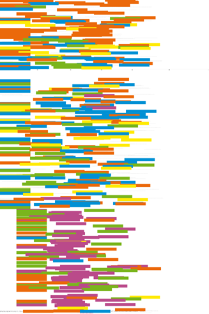Do citation systems represent theories of truth?, by Betsy Van der Veer Martens, Syracuse University, Syracuse, New York, USA
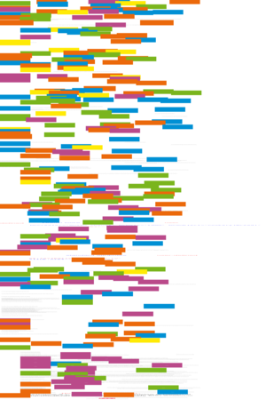Where is meaning when form is gone? Knowledge representation on the Web, by Terrence A. Brooks, University of Washington, Seattle, Washington, USA
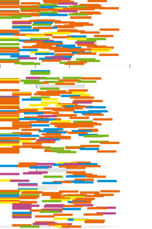Converting a controlled
vocabulary into an ontology: the case of GEM, by Jian Qin & Stephen
Paling, Syracuse University, Syracuse, New York, USA
Other Refereed Papers
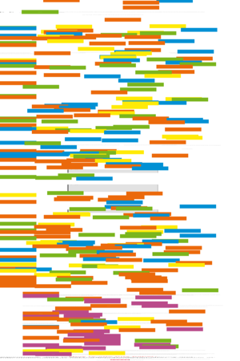Human issues of
library and information work, by Jela Steinerová, Comenius
University Bratislava, Slovak Republic
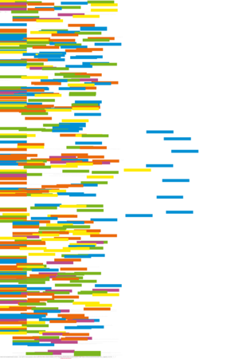National Information
Infrastructure and the realization of Singapore IT2000 initiative,
by Cheryl Marie Cordeiro and Suliman Al-Hawamdeh, Nanyang Technological
University, Singapore
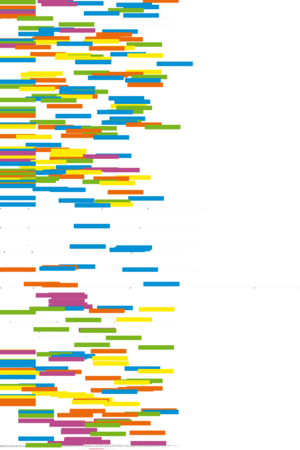Use of citation
analysis to predict the outcome of the 2001 Research Assessment Exercise
for Unit of Assessment (UoA) 61: Library and Information Management,
by Alison Holmes and Charles Oppenheim, Loughborough University, Loughborough,
UK
Refereed ISIC3 Workshop Papers
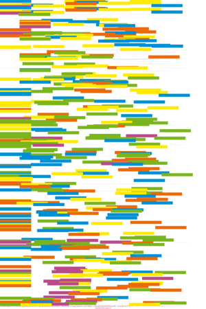Situating relevance:
exploring individual relevance assessments in context, by Theresa
Dirndorfer Anderson, University of Technology, Sydney, Australia
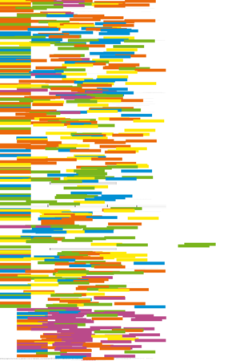Critical theory
as a foundation for pragmatic information systems design, by Gerald
Benoît, University of Kentucky, Lexington, Kentucky, USA
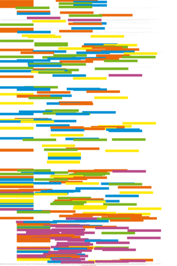The role of computer-mediated
communication in the research process of music scholars: an exploratory
investigation, by Christine D. Brown, University of Alabama, Tuscaloosa,
Alabama, USA
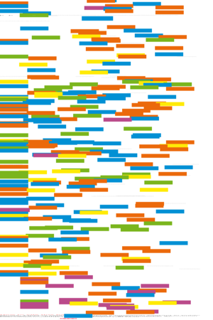Imposed information
seeking in public libraries and school library media centers: a common
behaviour?, by Melissa Gross, Florida State University, Tallahassee,
Florida, USA
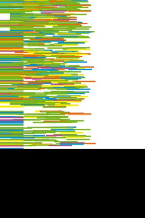Accounting for
users' inflated assessments of on-line catalogue search performance and
usefulness: an experimental study, by Charles R. Hildreth, Long Island
University, Brookville, USA
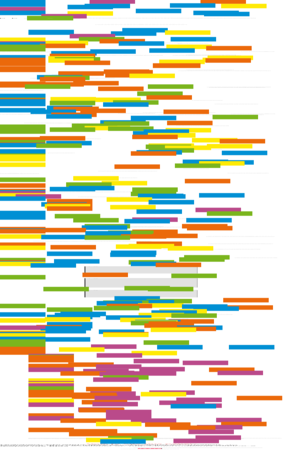Bridging information
requirements and information needs assessment: do scenarios and vignettes
provide a link? by Christine Urquhart, University of Wales, Aberystwyth,
UK
ISIC3 Doctoral Workshop Papers
Conference announcements
Bobcatsss
symposium Open2001, 29-31 January, Vilnius, Lithuania
Other links
World
List of Departments and Schools of Information Studies, Information Management,
Information Systems, etc.
If you find Information Research useful, please sign in and we'll notify you of future issues.
Information Research is published and maintained by Professor Tom Wilson. Design and Editorial content © T.D. Wilson 1996-2001